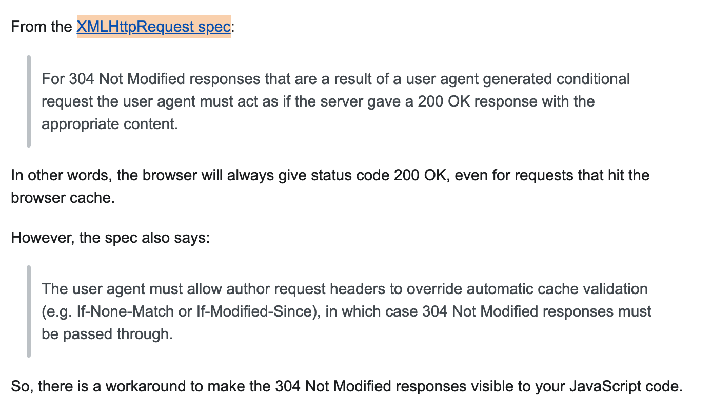
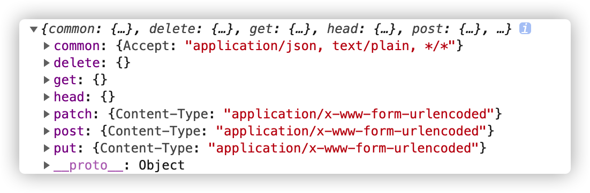

version-detect
前言
本文介绍了如何实现vue项目代码版本检测&提示更新，及其相关原理。
原理
项目中代码变动后，webpack打包时的contenthash也会变动（hash、chunkHash、contentHash之间的区别参考这里)。因此如果我们在一个全局的组件中定时请求index.html，再从app.[hash].js中将hash解析出来，与当前页index.html中的hash做对比，若hash不同，则版本发生了变动
关键代码
1 | |
废弃思路
HTTP缓存
若index.html没有变化，浏览器向后端请求时，会返回304，那能不能根据axios返回的response的状态码来判断版本有没有更新呢？下面给出作者的探究思路。
- 尝试将axios的response打印出来，却发现当Chrome network panel显示结果为304时，console打印出的状态码为200，如图所示：

- 根据Stackoverflow的这篇回答，如下：
（回答中提到的提示文档已经过时，如果小伙伴们发现了更加及时、权威的文章，欢迎补充。）
意思大概是，即使服务器返回了304 Not Modified，xhr返回结果中的status仍会是200，除非在请求头中自定义了缓存的验证（通过If-None-Match或If-Modified-Since）
作者尝试了下，对于一个请求，用charles抓包，charles中显示状态码为304，而chrome中显示状态码为200，应该跟上面也是同样的道理吧。
此外，作者尝试了下手动在http头中自定义缓存验证，得到了以下的结果：，说明304的状态码已经被传递给xhr了。至于axios报错的原因，则不深入追究了。
从另外一个角度考虑的话，在没有自定义验证规则的前提下，把304暴露给xhr是没有意义的，因为在项目中，并不知道到底去哪里取这个Not Modified的文件 - 所以结论是，可以这么做，但是要在axios中先自定义
If-None-Match或If-Modified-Since头，并且这两个字段的内容要额外请求一次来获取。不过这样就略显复杂。
 提示文档已经过时，如果小伙伴们发现了更加及时、权威的文章，欢迎补充。）
提示文档已经过时，如果小伙伴们发现了更加及时、权威的文章，欢迎补充。）HTTP缓存
需要注意的是，缓存在浏览器中是被默认启用的（参考What’s default value of cache-control? - Stack Overflow）。
而用axios发送请求时，默认不会发送缓存相关的header，将axios.defaults.headers打印出来如下：
因此，浏览器会默认将index.html缓存。在chrome中试验结果如下：
参考资料
用
vue inspect --mode production（也可用npx vue-cli-service inspect --mode production）打印出webpack配置，有以下关注点：output中的filename、chunkFilename，其中chunkFileName是指未被列在entry中，却又需要被打包出的chunk文件的名称。一般来说指懒加载的依赖。参考地址
如果这两项的内容是js/[name].[contenthash:8].js，（格式参考这里）则可以直接用作者写的正则，否则可能需要编辑配置/重新写正则entry项。entry的配置项命名规则，引用官网说明如下：If a string or array of strings is passed, the chunk is named main. If an object is passed, each key is the name of a chunk, and the value describes the entry point for the chunk.
我们这里着重看下entry中传入的是否是对象&对象的key（即生成的chunk的name）是否为app，若不是，则需要重新写正则
如何在本地调试
本博客所有文章除特别声明外，均采用 CC BY-SA 4.0 协议 ，转载请注明出处！